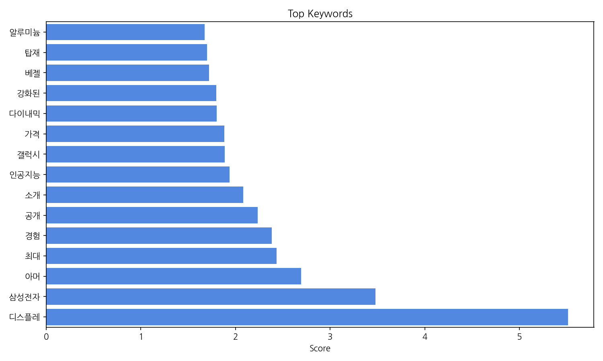
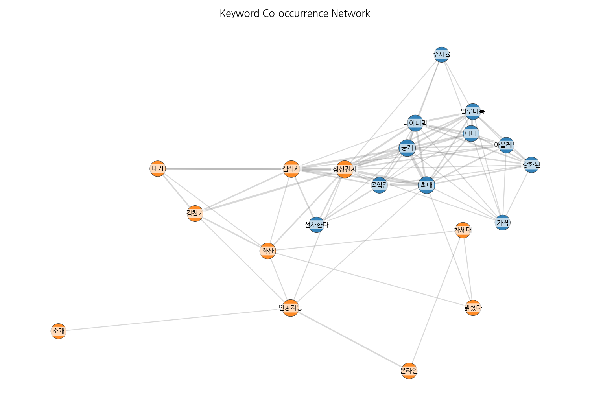
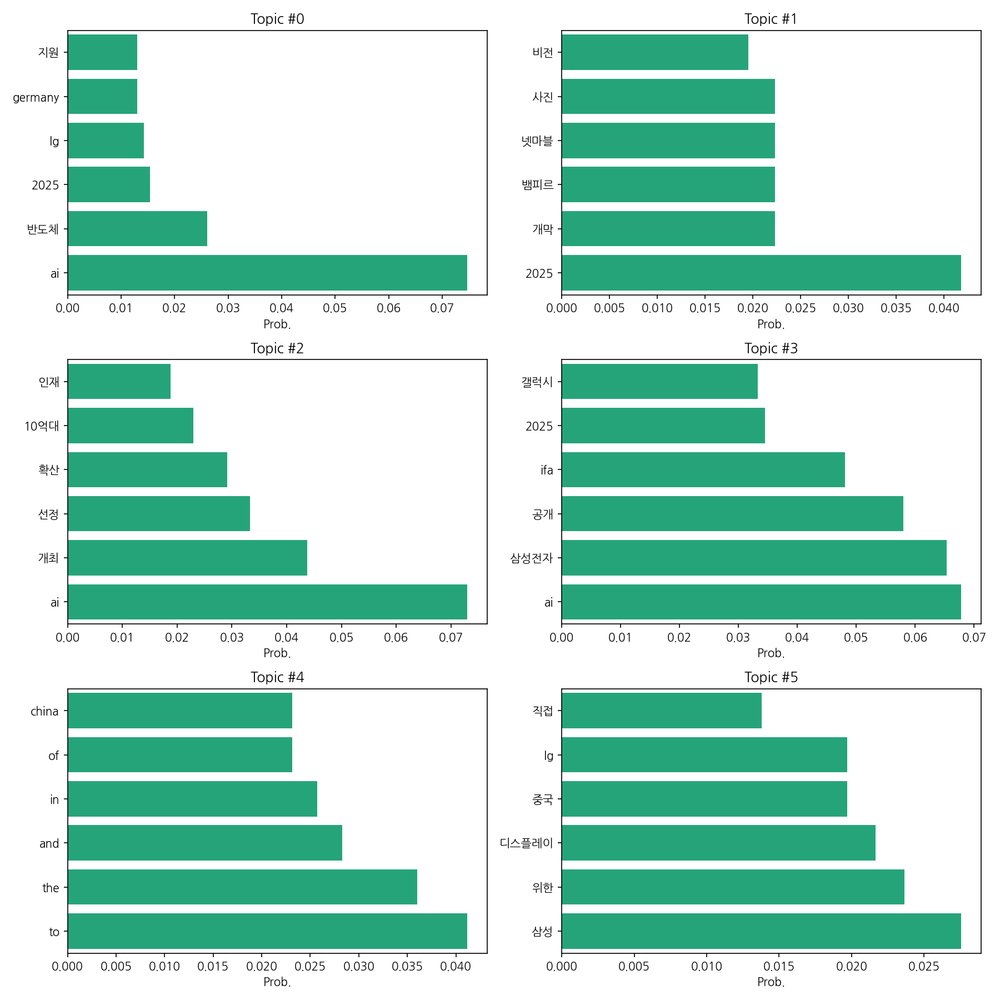
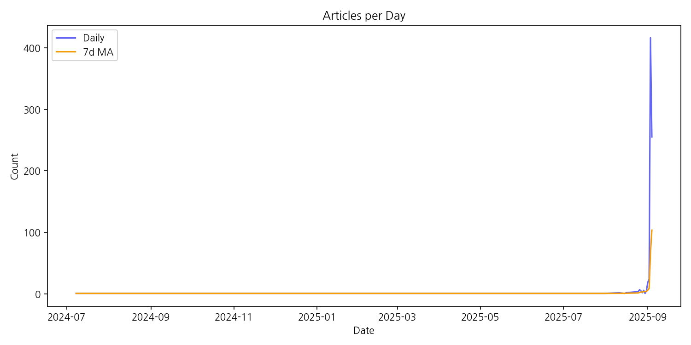

이번 기간 핵심 토픽과 키워드, 주요 시사점을 요약합니다.
핵심 맥락 설명: 제공된 데이터는 AI, 반도체, 그리고 2025년을 중심으로 한 한국의 기술 산업 동향을 보여줍니다. 주요 기업인 삼성전자와 LG의 기술 개발 및 시장 진출 전략, 그리고 AI 인재 확보 및 관련 기술의 확산에 대한 뉴스가 주를 이룹니다. 특히 2025년을 기점으로 AI 기술과 관련된 이벤트 및 제품 공개가 집중되어 있는 것을 알 수 있습니다.
최근 변화/스파이크: 2025년 9월 초에 뉴스 기사 수가 급격하게 증가하는 스파이크 현상이 나타났습니다. 이는 9월 3일을 정점으로 416건의 기사가 등장했는데, 이는 특정 기술 관련 행사나 제품 출시와 연관되어 있을 가능성이 높습니다.
실무 인사이트:
2025년 9월 초 뉴스 스파이크 원인 조사: 9월 초 기사 급증의 원인을 분석하여, 관련 이벤트, 제품 출시, 정부 정책 등을 파악하고, 향후 유사한 현상 예측 및 대응 전략을 수립합니다. 이는 경쟁사 동향 파악 및 시장 선점 기회 포착에 중요한 정보를 제공합니다.
| Rank | Keyword | Score |
|---|---|---|
| 1 | 디스플레 | 5.513 |
| 2 | 삼성전자 | 3.478 |
| 3 | 아머 | 2.694 |
| 4 | 최대 | 2.432 |
| 5 | 경험 | 2.383 |
| 6 | 공개 | 2.233 |
| 7 | 소개 | 2.083 |
| 8 | 인공지능 | 1.935 |
| 9 | 갤럭시 | 1.888 |
| 10 | 가격 | 1.881 |
| 11 | 다이내믹 | 1.8 |
| 12 | 강화된 | 1.798 |
| 13 | 베젤 | 1.721 |
| 14 | 탑재 | 1.698 |
| 15 | 알루미늄 | 1.675 |




핵심 맥락 설명: 제공된 데이터는 AI, 반도체, 그리고 2025년을 중심으로 한 한국의 기술 산업 동향을 보여줍니다. 주요 기업인 삼성전자와 LG의 기술 개발 및 시장 진출 전략, 그리고 AI 인재 확보 및 관련 기술의 확산에 대한 뉴스가 주를 이룹니다. 특히 2025년을 기점으로 AI 기술과 관련된 이벤트 및 제품 공개가 집중되어 있는 것을 알 수 있습니다.
최근 변화/스파이크: 2025년 9월 초에 뉴스 기사 수가 급격하게 증가하는 스파이크 현상이 나타났습니다. 이는 9월 3일을 정점으로 416건의 기사가 등장했는데, 이는 특정 기술 관련 행사나 제품 출시와 연관되어 있을 가능성이 높습니다.
실무 인사이트:
2025년 9월 초 뉴스 스파이크 원인 조사: 9월 초 기사 급증의 원인을 분석하여, 관련 이벤트, 제품 출시, 정부 정책 등을 파악하고, 향후 유사한 현상 예측 및 대응 전략을 수립합니다. 이는 경쟁사 동향 파악 및 시장 선점 기회 포착에 중요한 정보를 제공합니다.
| Idea | Target | Value Prop | Score |
|---|---|---|---|
| AI 기반 디스플레이 패널 결함 예측 시스템 | 삼성디스플레이, LG디스플레이 등 대규모 디스플레이 패널 제조업체의 생산 관리 부서 | AI 기반 이미지 분석 기술을 통해 미세한 결함까지 정확하게 예측하여 불량률을 최대 15% 감소시키고, 생산 효율성을 10% 향상시킵니다. 실시간 모니터링 및 예측 분석을 통해 사전 예방적 관리가 가능하여 생산 중단 및 비용 손실을 최소화합니다. | 4.0 |
| AI 기반 디스플레이 색 정확도 개선 솔루션 | 삼성전자, LG디스플레이 등 대규모 디스플레이 패널 제조업체의 품질 관리 부서 및 연구개발 부서 | AI 기반 머신러닝 알고리즘을 통해 디스플레이 색 정확도를 실시간으로 분석하고, 미세한 편차까지 감지하여 자동으로 보정합니다. 생산 효율 증대 및 품질 향상을 통해 제조 원가를 절감하고, 고객 만족도를 높입니다. 경쟁사 대비 정확도 향상 및 속도 개선을 통해 차별화된 가치를 제공합니다. | 4.0 |
| AI 기반 디스플레이 시각적 품질 최적화 솔루션 | 삼성전자, LG디스플레이 등 대규모 디스플레이 제조업체의 품질 관리 부서 및 생산 라인 | AI 기반 자동화 시스템을 통해 디스플레이의 색 정확도, 명암비, 균일성 등 시각적 품질을 정량적으로 분석하고 최적화하여 불량률을 감소시키고 생산성을 향상시킵니다. 기존의 수작업 검사 방식보다 훨씬 빠르고 정확하며, 객관적인 품질 평가를 제공하여 고객 만족도를 높입니다. 고해상도 디스플레이의 미세한 결함까지도 정확하게 검출할 수 있는 고급 알고리즘을 적용합니다. | 4.0 |
| AI 기반 디스플레이 패널 생산 최적화 플랫폼 | 삼성디스플레이, LG디스플레이 등 대규모 디스플레이 패널 제조업체의 생산 관리 및 품질 관리 부서 | AI 기반 예측 분석 및 자동화 시스템을 통해 불량률 감소 및 생산 효율 증대, 실시간 모니터링 및 데이터 기반 의사결정 지원으로 생산 비용 절감, 숙련된 인력의 부족을 보완하고 생산성 향상 및 품질 개선 | 4.0 |
| AI 기반 디스플레이 품질 검사 자동화 시스템 | 삼성전자, LG디스플레이와 같은 대규모 디스플레이 제조업체의 품질 관리 부서 | AI 기반의 고정확도 자동 검사 시스템으로 불량률 감소 및 생산성 향상을 제공합니다. 기존 시스템 대비 저렴한 비용으로 도입 가능하며, 실시간 데이터 분석을 통한 예측 정비로 유지보수 비용을 절감합니다. AI 학습 기능을 통해 지속적인 성능 향상을 보장합니다. | 3.8 |